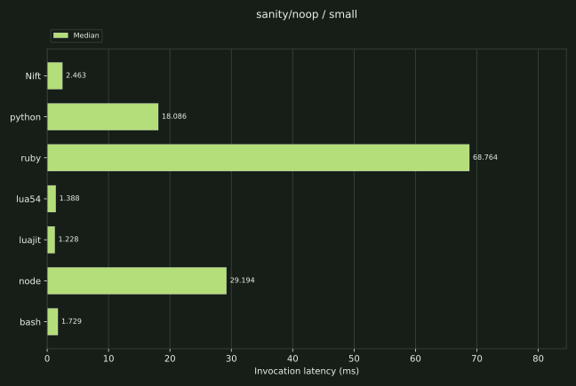
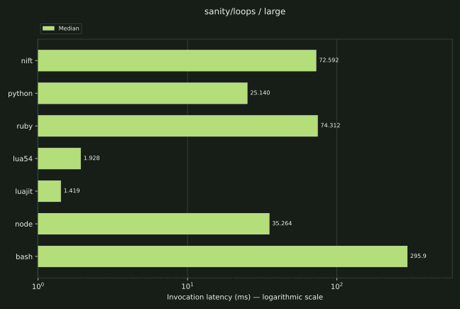
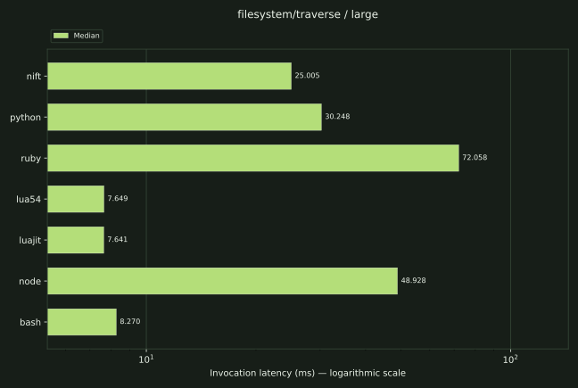

Experiment 01 / runtime & scripting
One runtime.
Different kinds
of work.
What does Nift cost as a scripting language? Separate startup-sensitive snippets from sustained computation and practical file/data work, then compare idiomatic implementations.
Series 20261015-v4120-final-c14d068 · Nift 4.12.0 final release candidate · frozen source revision. This report displays the final candidate only; historical evidence remains in lab-evidence.
Read the workload first
A language score hides the tradeoffs.
No-op/output mainly expose invocation cost. Tiny snippets are not application throughput.
Loops, calls, arrays, map/set, Fibonacci and grid BFS exercise interpreter/JIT and collection paths.
JSON reads/parsing, record transformation/traversal and recursive files include actual I/O/helper costs.
Absolute latency
Startup and sustained work tell different stories.
Nift’s tiny no-op median was 2.463 ms, while the large arithmetic-loop invocation was 72.592 ms. Read the latter alongside native/JIT peers below: low invocation cost does not establish sustained execution throughput.
| Workload / size | nift | python | ruby | lua54 | luajit | node | bash |
|---|---|---|---|---|---|---|---|
| sanity/noop / small | 2.463 | 18.086 | 68.764 | 1.388 | 1.228 | 29.194 | 1.729 |
| sanity/loops / large | 72.592 | 25.140 | 74.312 | 1.928 | 1.419 | 35.264 | 295.9 |
| sanity/function-calls / large | 193.7 | 29.079 | 75.675 | 3.731 | 1.419 | 35.443 | 518.1 |
| arrays-strings-hash/sort-index / large | 511.6 | 23.052 | 78.734 | 36.891 | 34.924 | 46.026 | 211.8 |
| graphs-trees-search/bfs / large | 799.4 | 96.861 | 121.7 | 35.281 | 16.932 | 82.224 | — |
| structured-data/json-parse / large | 182.1 | 79.343 | 174.6 | — | — | 66.988 | — |
| filesystem/traverse / large | 25.005 | 30.248 | 72.058 | 7.649 | 7.641 | 48.928 | 8.270 |
A dash (—) means the implementation was outside scope and deliberately excluded; it is not a zero or a failed measurement. Selected classes are not an overall ranking.









sanity/noop
| Size | nift | python | ruby | lua54 | luajit | node | bash |
|---|---|---|---|---|---|---|---|
| small | 2.463 | 18.086 | 68.764 | 1.388 | 1.228 | 29.194 | 1.729 |
| large | 2.389 | 17.879 | 68.299 | 1.381 | 1.184 | 29.280 | 1.607 |
Retained tails and memory: sanity/noop
| Size / metric | nift | python | ruby | lua54 | luajit | node | bash |
|---|---|---|---|---|---|---|---|
| small / p95 ms | 2.849 | 19.060 | 82.896 | 1.599 | 1.299 | 32.380 | 2.083 |
| small / Minimum ms | 2.378 | 17.654 | 66.765 | 1.340 | 1.148 | 26.754 | 1.630 |
| small / Maximum ms | 2.977 | 19.117 | 92.721 | 1.741 | 1.310 | 33.490 | 2.356 |
| small / RSS MiB | 5.875 | 10.000 | 22.625 | 2.250 | 2.375 | 41.574 | 3.500 |
| large / p95 ms | 2.511 | 20.457 | 84.418 | 1.615 | 1.227 | 31.080 | 1.994 |
| large / Minimum ms | 2.129 | 17.411 | 67.000 | 1.226 | 1.096 | 26.832 | 1.580 |
| large / Maximum ms | 2.536 | 21.947 | 92.432 | 1.747 | 1.228 | 32.001 | 2.191 |
| large / RSS MiB | 5.750 | 10.000 | 22.625 | 2.250 | 2.312 | 43.322 | 3.375 |
sanity/output
| Size | nift | python | ruby | lua54 | luajit | node | bash |
|---|---|---|---|---|---|---|---|
| small | 2.521 | 18.089 | 69.556 | 1.360 | 1.217 | 31.762 | 1.644 |
| large | 2.465 | 18.077 | 69.862 | 1.391 | 1.229 | 32.248 | 1.647 |
Retained tails and memory: sanity/output
| Size / metric | nift | python | ruby | lua54 | luajit | node | bash |
|---|---|---|---|---|---|---|---|
| small / p95 ms | 2.826 | 18.515 | 83.277 | 1.517 | 1.279 | 35.150 | 2.276 |
| small / Minimum ms | 2.416 | 17.651 | 67.218 | 1.229 | 1.127 | 30.059 | 1.561 |
| small / Maximum ms | 2.996 | 18.722 | 91.565 | 1.570 | 1.292 | 36.771 | 2.372 |
| small / RSS MiB | 6.250 | 10.000 | 22.625 | 2.250 | 2.375 | 45.199 | 3.500 |
| large / p95 ms | 2.568 | 18.316 | 75.912 | 3.213 | 1.369 | 33.796 | 1.931 |
| large / Minimum ms | 2.213 | 17.612 | 67.114 | 1.237 | 1.105 | 29.568 | 1.591 |
| large / Maximum ms | 2.568 | 18.352 | 78.935 | 4.471 | 1.430 | 34.144 | 2.049 |
| large / RSS MiB | 6.438 | 10.000 | 22.625 | 2.250 | 2.375 | 45.199 | 3.500 |
sanity/loops
| Size | nift | python | ruby | lua54 | luajit | node | bash |
|---|---|---|---|---|---|---|---|
| small | 3.346 | 17.923 | 67.955 | 1.387 | 1.281 | 32.984 | 4.709 |
| large | 72.592 | 25.140 | 74.312 | 1.928 | 1.419 | 35.264 | 295.9 |
Retained tails and memory: sanity/loops
| Size / metric | nift | python | ruby | lua54 | luajit | node | bash |
|---|---|---|---|---|---|---|---|
| small / p95 ms | 3.933 | 18.599 | 80.867 | 1.525 | 1.391 | 33.934 | 6.265 |
| small / Minimum ms | 3.006 | 17.650 | 67.061 | 1.257 | 1.196 | 31.362 | 4.587 |
| small / Maximum ms | 4.227 | 18.672 | 88.941 | 1.562 | 1.411 | 34.104 | 7.307 |
| small / RSS MiB | 6.812 | 10.000 | 22.625 | 2.375 | 2.375 | 45.699 | 3.500 |
| large / p95 ms | 75.565 | 25.391 | 79.204 | 2.111 | 1.441 | 36.186 | 354.1 |
| large / Minimum ms | 71.830 | 24.670 | 72.312 | 1.735 | 1.297 | 33.784 | 290.0 |
| large / Maximum ms | 76.709 | 25.488 | 80.389 | 2.114 | 1.442 | 36.339 | 393.7 |
| large / RSS MiB | 6.750 | 10.000 | 22.625 | 2.375 | 2.375 | 51.264 | 3.500 |
sanity/function-calls
| Size | nift | python | ruby | lua54 | luajit | node | bash |
|---|---|---|---|---|---|---|---|
| small | 4.650 | 18.039 | 68.762 | 1.406 | 1.301 | 32.182 | 6.979 |
| large | 193.7 | 29.079 | 75.675 | 3.731 | 1.419 | 35.443 | 518.1 |
Retained tails and memory: sanity/function-calls
| Size / metric | nift | python | ruby | lua54 | luajit | node | bash |
|---|---|---|---|---|---|---|---|
| small / p95 ms | 5.494 | 19.282 | 72.224 | 1.556 | 1.375 | 35.316 | 7.525 |
| small / Minimum ms | 4.461 | 17.401 | 67.427 | 1.282 | 1.193 | 30.387 | 6.783 |
| small / Maximum ms | 5.973 | 20.090 | 72.318 | 1.614 | 1.377 | 35.526 | 7.834 |
| small / RSS MiB | 6.812 | 10.000 | 22.625 | 2.375 | 2.375 | 45.449 | 3.500 |
| large / p95 ms | 199.3 | 29.551 | 77.863 | 4.983 | 1.498 | 40.979 | 542.2 |
| large / Minimum ms | 182.5 | 28.407 | 73.250 | 3.430 | 1.277 | 33.444 | 512.9 |
| large / Maximum ms | 200.5 | 29.599 | 78.159 | 5.907 | 1.546 | 42.986 | 544.4 |
| large / RSS MiB | 6.812 | 10.000 | 22.625 | 2.375 | 2.375 | 51.324 | 3.500 |
arrays-strings-hash/scan
| Size | nift | python | ruby | lua54 | luajit | node | bash |
|---|---|---|---|---|---|---|---|
| small | 3.556 | 17.911 | 68.051 | 1.437 | 1.291 | 31.963 | 5.215 |
| large | 82.874 | 24.012 | 76.172 | 2.154 | 1.374 | 38.856 | 347.4 |
Retained tails and memory: arrays-strings-hash/scan
| Size / metric | nift | python | ruby | lua54 | luajit | node | bash |
|---|---|---|---|---|---|---|---|
| small / p95 ms | 4.795 | 18.439 | 70.492 | 1.598 | 2.201 | 32.962 | 5.484 |
| small / Minimum ms | 3.374 | 17.461 | 67.083 | 1.259 | 1.205 | 30.172 | 5.103 |
| small / Maximum ms | 5.664 | 18.543 | 70.925 | 1.661 | 2.905 | 33.198 | 5.487 |
| small / RSS MiB | 6.750 | 10.000 | 22.625 | 2.375 | 2.375 | 45.699 | 3.500 |
| large / p95 ms | 85.976 | 26.829 | 80.463 | 2.361 | 1.512 | 42.173 | 368.3 |
| large / Minimum ms | 80.759 | 23.654 | 74.613 | 1.995 | 1.275 | 35.976 | 342.9 |
| large / Maximum ms | 86.807 | 28.241 | 81.397 | 2.481 | 1.560 | 42.803 | 379.0 |
| large / RSS MiB | 6.750 | 10.000 | 22.625 | 2.375 | 2.375 | 52.699 | 3.500 |
arrays-strings-hash/frequency-count
| Size | nift | python | ruby | lua54 | luajit | node | bash |
|---|---|---|---|---|---|---|---|
| small | 7.068 | 18.062 | 69.539 | 1.638 | 1.312 | 33.286 | 8.547 |
| large | 416.5 | 51.608 | 100.5 | 23.349 | 3.022 | 39.929 | 670.4 |
Retained tails and memory: arrays-strings-hash/frequency-count
| Size / metric | nift | python | ruby | lua54 | luajit | node | bash |
|---|---|---|---|---|---|---|---|
| small / p95 ms | 7.615 | 18.928 | 71.208 | 1.763 | 1.406 | 35.808 | 9.361 |
| small / Minimum ms | 6.865 | 17.721 | 68.012 | 1.507 | 1.228 | 32.025 | 8.344 |
| small / Maximum ms | 7.684 | 19.454 | 71.450 | 1.797 | 1.423 | 36.367 | 9.426 |
| small / RSS MiB | 6.812 | 10.000 | 22.625 | 2.375 | 2.375 | 45.951 | 3.562 |
| large / p95 ms | 436.7 | 52.878 | 106.9 | 24.537 | 3.467 | 41.154 | 684.9 |
| large / Minimum ms | 399.7 | 51.145 | 97.262 | 22.911 | 2.853 | 37.867 | 660.5 |
| large / Maximum ms | 438.3 | 53.054 | 109.0 | 24.690 | 3.633 | 41.262 | 688.0 |
| large / RSS MiB | 6.750 | 10.000 | 22.750 | 2.375 | 2.375 | 51.703 | 3.500 |
arrays-strings-hash/sliding-window
| Size | nift | python | ruby | lua54 | luajit | node | bash |
|---|---|---|---|---|---|---|---|
| small | 5.287 | 18.231 | 67.946 | 1.458 | 1.339 | 33.777 | 13.274 |
| large | 250.1 | 43.590 | 79.270 | 6.379 | 2.404 | 46.921 | 5,056.6 |
Retained tails and memory: arrays-strings-hash/sliding-window
| Size / metric | nift | python | ruby | lua54 | luajit | node | bash |
|---|---|---|---|---|---|---|---|
| small / p95 ms | 5.852 | 18.740 | 71.024 | 1.655 | 1.434 | 35.974 | 14.460 |
| small / Minimum ms | 4.980 | 17.843 | 66.749 | 1.344 | 1.225 | 31.125 | 12.968 |
| small / Maximum ms | 6.053 | 18.890 | 72.246 | 1.757 | 1.436 | 36.525 | 15.049 |
| small / RSS MiB | 7.125 | 10.000 | 22.625 | 2.375 | 2.375 | 45.949 | 3.625 |
| large / p95 ms | 257.9 | 45.926 | 82.851 | 7.494 | 2.820 | 49.486 | 5,112.5 |
| large / Minimum ms | 245.1 | 41.610 | 78.533 | 6.120 | 2.340 | 44.542 | 5,019.3 |
| large / Maximum ms | 259.3 | 46.660 | 83.403 | 7.596 | 3.009 | 49.823 | 5,115.7 |
| large / RSS MiB | 25.527 | 13.750 | 23.801 | 4.250 | 3.312 | 52.453 | 20.227 |
arrays-strings-hash/sort-index
| Size | nift | python | ruby | lua54 | luajit | node | bash |
|---|---|---|---|---|---|---|---|
| small | 6.847 | 17.756 | 68.679 | 1.628 | 1.508 | 34.992 | 7.391 |
| large | 511.6 | 23.052 | 78.734 | 36.891 | 34.924 | 46.026 | 211.8 |
Retained tails and memory: arrays-strings-hash/sort-index
| Size / metric | nift | python | ruby | lua54 | luajit | node | bash |
|---|---|---|---|---|---|---|---|
| small / p95 ms | 7.111 | 18.461 | 70.481 | 1.764 | 1.793 | 42.860 | 7.516 |
| small / Minimum ms | 6.508 | 17.445 | 66.877 | 1.524 | 1.416 | 31.367 | 7.248 |
| small / Maximum ms | 7.211 | 18.663 | 70.508 | 1.774 | 1.865 | 44.096 | 7.581 |
| small / RSS MiB | 7.969 | 10.000 | 22.750 | 2.375 | 2.375 | 46.074 | 3.750 |
| large / p95 ms | 538.6 | 24.632 | 81.105 | 40.579 | 39.899 | 48.476 | 219.8 |
| large / Minimum ms | 492.9 | 22.386 | 76.233 | 36.083 | 34.002 | 43.450 | 208.0 |
| large / Maximum ms | 540.4 | 24.980 | 81.348 | 42.017 | 40.760 | 48.546 | 220.4 |
| large / RSS MiB | 139.0 | 13.750 | 25.051 | 4.375 | 3.250 | 53.201 | 27.914 |
arrays-strings-hash/map-set
| Size | nift | python | ruby | lua54 | luajit | node | bash |
|---|---|---|---|---|---|---|---|
| small | 4.701 | 18.069 | 71.860 | 1.443 | 1.395 | 34.409 | 4.515 |
| large | 212.7 | 28.642 | 93.273 | 7.224 | 2.633 | 45.464 | 271.5 |
Retained tails and memory: arrays-strings-hash/map-set
| Size / metric | nift | python | ruby | lua54 | luajit | node | bash |
|---|---|---|---|---|---|---|---|
| small / p95 ms | 4.886 | 19.061 | 76.299 | 1.566 | 1.778 | 37.183 | 4.923 |
| small / Minimum ms | 4.651 | 17.596 | 69.278 | 1.403 | 1.270 | 31.706 | 4.396 |
| small / Maximum ms | 4.896 | 19.349 | 77.280 | 1.595 | 1.778 | 37.653 | 5.083 |
| small / RSS MiB | 7.000 | 10.125 | 22.875 | 2.375 | 2.375 | 45.449 | 3.625 |
| large / p95 ms | 223.2 | 29.462 | 95.634 | 7.826 | 3.152 | 49.602 | 291.7 |
| large / Minimum ms | 203.0 | 27.641 | 91.727 | 6.836 | 2.561 | 43.265 | 265.0 |
| large / Maximum ms | 224.5 | 29.525 | 96.218 | 7.887 | 3.470 | 50.312 | 301.9 |
| large / RSS MiB | 30.100 | 18.340 | 27.758 | 4.250 | 3.375 | 56.447 | 14.625 |
dynamic-programming/fibonacci
| Size | nift | python | ruby | lua54 | luajit | node | bash |
|---|---|---|---|---|---|---|---|
| small | 2.817 | 17.853 | 68.539 | 1.351 | 1.263 | 34.014 | — |
| large | 141.5 | 32.827 | 82.622 | 2.788 | 2.060 | 40.490 | — |
Retained tails and memory: dynamic-programming/fibonacci
| Size / metric | nift | python | ruby | lua54 | luajit | node | bash |
|---|---|---|---|---|---|---|---|
| small / p95 ms | 2.972 | 20.763 | 70.553 | 1.497 | 1.330 | 39.660 | — |
| small / Minimum ms | 2.688 | 17.430 | 66.800 | 1.310 | 1.148 | 31.341 | — |
| small / Maximum ms | 2.987 | 22.573 | 70.629 | 1.547 | 1.333 | 42.011 | — |
| small / RSS MiB | 6.812 | 10.000 | 22.625 | 2.375 | 2.375 | 45.953 | — |
| large / p95 ms | 144.2 | 33.824 | 85.342 | 3.024 | 2.220 | 47.839 | — |
| large / Minimum ms | 140.8 | 31.792 | 79.885 | 2.674 | 1.973 | 36.071 | — |
| large / Maximum ms | 144.3 | 34.045 | 86.182 | 3.191 | 2.221 | 52.281 | — |
| large / RSS MiB | 6.750 | 10.000 | 22.750 | 2.375 | 2.375 | 53.574 | — |
graphs-trees-search/bfs
| Size | nift | python | ruby | lua54 | luajit | node | bash |
|---|---|---|---|---|---|---|---|
| small | 11.405 | 19.184 | 69.249 | 1.868 | 1.986 | 44.393 | — |
| large | 799.4 | 96.861 | 121.7 | 35.281 | 16.932 | 82.224 | — |
Retained tails and memory: graphs-trees-search/bfs
| Size / metric | nift | python | ruby | lua54 | luajit | node | bash |
|---|---|---|---|---|---|---|---|
| small / p95 ms | 11.952 | 20.455 | 72.801 | 1.989 | 2.214 | 46.937 | — |
| small / Minimum ms | 11.140 | 18.436 | 68.054 | 1.810 | 1.934 | 33.727 | — |
| small / Maximum ms | 12.084 | 20.534 | 73.778 | 2.000 | 2.277 | 47.743 | — |
| small / RSS MiB | 7.250 | 10.125 | 22.625 | 2.500 | 2.500 | 53.738 | — |
| large / p95 ms | 871.8 | 102.3 | 127.6 | 35.998 | 17.640 | 95.539 | — |
| large / Minimum ms | 786.4 | 95.093 | 117.9 | 34.792 | 16.590 | 75.938 | — |
| large / Maximum ms | 906.1 | 103.2 | 128.6 | 36.010 | 17.794 | 103.4 | — |
| large / RSS MiB | 32.771 | 13.793 | 26.000 | 6.375 | 5.625 | 64.602 | — |
structured-data/json-parse
| Size | nift | python | ruby | lua54 | luajit | node | bash |
|---|---|---|---|---|---|---|---|
| small | 4.269 | 23.702 | 75.255 | — | — | 33.976 | — |
| large | 182.1 | 79.343 | 174.6 | — | — | 66.988 | — |
Retained tails and memory: structured-data/json-parse
| Size / metric | nift | python | ruby | lua54 | luajit | node | bash |
|---|---|---|---|---|---|---|---|
| small / p95 ms | 4.819 | 26.786 | 80.203 | — | — | 40.134 | — |
| small / Minimum ms | 4.171 | 23.142 | 71.841 | — | — | 31.176 | — |
| small / Maximum ms | 5.233 | 27.359 | 80.602 | — | — | 43.525 | — |
| small / RSS MiB | 7.551 | 11.000 | 23.000 | — | — | 45.516 | — |
| large / p95 ms | 198.6 | 98.836 | 177.7 | — | — | 74.650 | — |
| large / Minimum ms | 177.9 | 77.995 | 170.8 | — | — | 63.364 | — |
| large / Maximum ms | 208.6 | 109.2 | 178.5 | — | — | 75.589 | — |
| large / RSS MiB | 122.6 | 34.988 | 50.125 | — | — | 57.027 | — |
structured-data/json-transform
| Size | nift | python | ruby | lua54 | luajit | node | bash |
|---|---|---|---|---|---|---|---|
| small | 7.186 | 24.470 | 74.607 | — | — | 35.514 | — |
| large | 462.9 | 75.314 | 138.1 | — | — | 74.546 | — |
Retained tails and memory: structured-data/json-transform
| Size / metric | nift | python | ruby | lua54 | luajit | node | bash |
|---|---|---|---|---|---|---|---|
| small / p95 ms | 8.865 | 30.204 | 76.414 | — | — | 36.710 | — |
| small / Minimum ms | 7.015 | 23.594 | 71.680 | — | — | 31.165 | — |
| small / Maximum ms | 9.968 | 30.389 | 76.686 | — | — | 36.810 | — |
| small / RSS MiB | 7.375 | 10.875 | 23.000 | — | — | 46.076 | — |
| large / p95 ms | 485.0 | 82.764 | 144.2 | — | — | 84.187 | — |
| large / Minimum ms | 453.7 | 72.900 | 133.5 | — | — | 70.570 | — |
| large / Maximum ms | 499.6 | 86.024 | 146.7 | — | — | 86.731 | — |
| large / RSS MiB | 94.346 | 33.000 | 40.375 | — | — | 68.699 | — |
structured-data/json-traverse
| Size | nift | python | ruby | lua54 | luajit | node | bash |
|---|---|---|---|---|---|---|---|
| small | 6.235 | 23.981 | 74.291 | — | — | 34.083 | — |
| large | 370.4 | 83.812 | 182.8 | — | — | 68.608 | — |
Retained tails and memory: structured-data/json-traverse
| Size / metric | nift | python | ruby | lua54 | luajit | node | bash |
|---|---|---|---|---|---|---|---|
| small / p95 ms | 7.538 | 29.323 | 76.513 | — | — | 42.642 | — |
| small / Minimum ms | 6.040 | 23.228 | 72.255 | — | — | 31.187 | — |
| small / Maximum ms | 8.197 | 32.589 | 76.839 | — | — | 47.528 | — |
| small / RSS MiB | 7.613 | 11.062 | 23.000 | — | — | 46.137 | — |
| large / p95 ms | 391.4 | 106.3 | 186.8 | — | — | 76.285 | — |
| large / Minimum ms | 365.4 | 81.262 | 178.0 | — | — | 66.434 | — |
| large / Maximum ms | 394.3 | 120.1 | 188.3 | — | — | 77.410 | — |
| large / RSS MiB | 122.6 | 34.990 | 50.125 | — | — | 62.656 | — |
filesystem/traverse
| Size | nift | python | ruby | lua54 | luajit | node | bash |
|---|---|---|---|---|---|---|---|
| small | 3.104 | 23.201 | 69.037 | 4.748 | 4.614 | 34.403 | 5.250 |
| large | 25.005 | 30.248 | 72.058 | 7.649 | 7.641 | 48.928 | 8.270 |
Retained tails and memory: filesystem/traverse
| Size / metric | nift | python | ruby | lua54 | luajit | node | bash |
|---|---|---|---|---|---|---|---|
| small / p95 ms | 3.345 | 25.361 | 71.207 | 4.917 | 4.870 | 44.139 | 5.352 |
| small / Minimum ms | 3.022 | 22.776 | 67.252 | 4.621 | 4.544 | 31.681 | 5.216 |
| small / Maximum ms | 3.363 | 26.341 | 71.772 | 4.954 | 4.959 | 50.029 | 5.356 |
| small / RSS MiB | 6.375 | 10.625 | 22.625 | 2.500 | 2.500 | 46.078 | 3.500 |
| large / p95 ms | 25.901 | 37.293 | 77.073 | 7.876 | 8.332 | 63.125 | 8.860 |
| large / Minimum ms | 24.392 | 29.666 | 69.497 | 7.539 | 7.438 | 46.795 | 8.059 |
| large / Maximum ms | 26.425 | 41.878 | 77.299 | 7.927 | 8.749 | 64.439 | 9.028 |
| large / RSS MiB | 9.000 | 11.000 | 23.125 | 2.500 | 2.500 | 54.949 | 3.375 |
| Runtime | No-op RSS MiB | Large traversal RSS MiB |
|---|---|---|
| nift | 5.875 | 9.000 |
| python | 10.000 | 11.000 |
| ruby | 22.625 | 23.125 |
| lua54 | 2.250 | 2.500 |
| luajit | 2.375 | 2.500 |
| node | 41.574 | 54.949 |
| bash | 3.500 | 3.375 |
Measurement & correctness
Every sample earns its place.
Ten measured samples plus two retained warmups per job; serial execution, rotated order, C-supervised fork/exec-to-exit latency and Linux waited-child high-water RSS. Every invocation must exit successfully and match its golden output. Alternate numeric formatting is accepted only when exact finite Decimal values agree; rounded output does not count.
Preparation is outside timing. Every sample creates a fresh runtime process with OS caches uncontrolled. We call this fresh-process-repeated, correcting the old suite’s misleading identical cold/warm labels. Historical runs are not merged.
Implementation choices
Observation before interpretation.
Native/JIT collection mechanisms can earn an advantage in sustained computation; invocation cost matters more for tiny automation. Nift’s integrated file/data functionality may be useful without winning every row. No benchmark here prices maintainability or feature convenience.
Bash is excluded from structured-data, Fibonacci and BFS where unnatural. Its recursive file test uses find/wc; other implementations use native APIs. BFS compares idiomatic queue/distance structures rather than identical internals. JSON parse/traverse include the same fixture read. Helpers remain inside timing.
Frequency-count v2 streams counters consistently; sort-index describes sorting and indexed reads. The misleading two-pointer endpoint test is omitted. Three redundant sanity microbenchmarks and duplicate shell startup are omitted. JSON-mutate duplicated record transformation without proving persistent array mutation. Partial JSON-query and unimplemented SQLite/mixed/breadth families are explicit coverage gaps. More end-to-end practical workflows would strengthen relevance.
Practitioner judgement / AI-DX
Choose for the actual workflow.
For a standalone general-purpose script, especially sustained data/compute work, I would usually choose Python (or a workload-appropriate native/JIT runtime), using the peer rows rather than Nift’s startup cost alone. Inside a Nift-owned project combining templates, files, build policy and tasks, I would choose Nift where the shared runtime and explicit contracts simplify agent maintenance. Human-plus-agent and agent-primary choices depend on those project requirements; the benchmark does not measure authoring error rates or prove that one language is universally best.
Machine-readable inputs, ownership and dependencies can be useful explicitness rather than redundant ceremony. These qualitative judgements do not turn the harness’s golden-output/fixture checks into automatic product guarantees. Memory remains a separately qualified waited-child high-water measure, not aggregate process-tree usage or a combined performance score.
Frozen environment
Exact source, tools and boundaries.
Final candidate Nift 4.12.0, exact clean source c14d06835bca515a5281e41da0e40219c2d60ef0; CLI SHA-256 7dd42dcee5ca4a6965f0823c0ae59198282da1eb77e0fcd4cae93a537870a6fb. Native Make -O2, GCC 13.3; dedicated g6-standard-4 (8 GB / four vCPUs), Ubuntu 24.04, timed processes pinned to CPU 0. OS caches are uncontrolled; this is not machine-cold timing. Historical hosts and diagnostic cohorts are never pooled.
| System | Measured version |
|---|---|
| nift | Nift v4.12.0 |
| python | Python 3.12.3 |
| ruby | ruby 3.2.3 (2024-01-18 revision 52bb2ac0a6) [x86_64-linux-gnu] |
| lua54 | Lua 5.4.6 Copyright (C) 1994-2023 Lua.org, PUC-Rio |
| luajit | LuaJIT 2.1.1703358377 -- Copyright (C) 2005-2023 Mike Pall. https://luajit.org/ |
| node | v24.21.0 |
| bash | GNU bash, version 5.2.21(1)-release (x86_64-pc-linux-gnu) |
Exact build identity · Frozen suite and tool pins · Actual compiler/package inventory.
Independent complete-count/distribution audit · Normalized measurements · Complete raw data and retained warmups. No failed or superseded attempt is substituted for this accepted series.
Reproduce / scrutinise
All observations are retained.
Complete accepted series; the frozen suite revision and exact invocation are recorded in its readiness and official controller files. Summaries are independently recomputed from raw observations.
Conclusion
Workload-specific evidence.
These results support bounded implementation comparisons, not one scripting-language league table. Algorithms are diagnostics; file/data rows start a practical corpus which should expand before making broad claims.
Nift Benchmarks